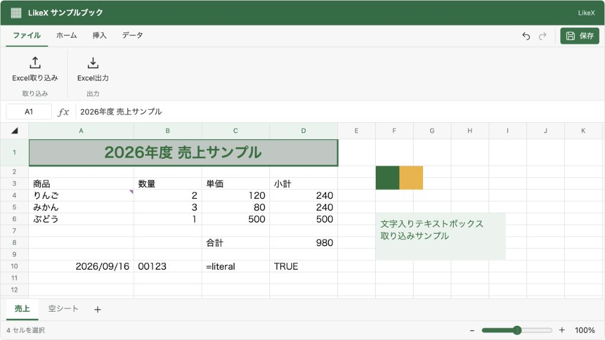
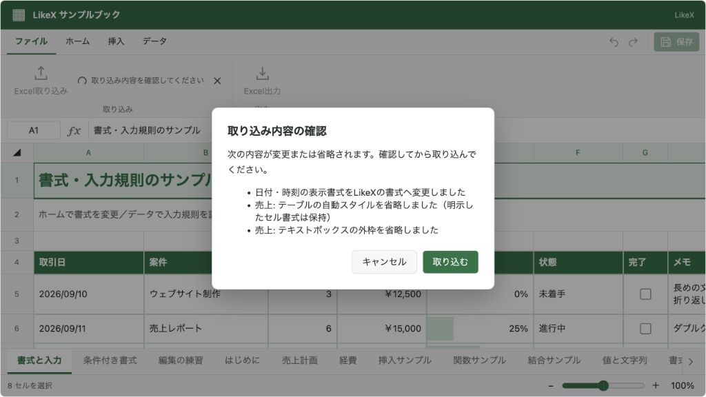

@likex/spreadsheet
Excel取り込み
.xlsxを下書きへ取り込み、警告の確認・編集許可・Undoにつなげます。画面なしのJSON変換にも対応します。
画面例を見る ↓「ファイル」タブの「Excel取り込み」から .xlsx を開けます。同じタブに「Excel出力」もあります。取り込みはブック全体を新しい下書きに置き換えます。サーバーへの保存は行わず、通常の「保存」で onSave にJSONを渡します。
画面から使う#
<Spreadsheet
initialWorkbook={workbook}
onSave={saveWorkbook}
onEvent={event => {
if (event.type === "import") {
console.log(event.status, event.requestId);
}
}}
/>
// 取り込みだけを非表示・無効にする
<Spreadsheet onSave={saveWorkbook} features={{ importExcel: false }} />importExcel は既定でONです。読み取り専用、または onSave を省略した場合には取り込めません。Excel出力は読み取り専用でも使えます。ネイティブ形式の importNative・exportNative も含め、利用可能な入出力をすべて無効にすると「ファイル」タブも消えます。.spon の読み書きも参照してください。
未保存の変更や入力中の編集があると、置き換え前に確認します。対応していない内容を検出した場合は、省略・変換の内容をダイアログで示し、取り込むかキャンセルするか選べます。読み込み失敗やキャンセルでは元の下書きを維持します。取り込みが成功すると、Undoで元のブック、Redoで取り込んだブックに戻せます（undoRedo が有効な場合）。
初回の変更には通常の onEditRequest が適用されます。読み込み・内容確認・編集許可の待機中に別の編集が発生した場合は、古い確認結果で上書きせず取り込みを中止します。
取り込み後に表示するシートは await ref.current.importExcel(file, { sheetName: "売上" }) で指定できます。sheetId も使えますが、XLSXから生成されるIDは取り込み結果のIDを指定する必要があるため、元ファイルの既知の名前には sheetName が便利です。名前は完全一致で、IDと名前の両方を渡した場合は同じシートを指す必要があります。不正・未知・不一致の指定は確認や適用の前にPromiseをrejectし、元の下書き・選択・履歴を保持します。対象指定は取り込み開始時に取得し、非同期待機中にoptionsを書き換えても変わりません。指定しない場合は従来の取り込み後の選択規約を維持します。画面なしで変換してから開く場合は initialSheetId / initialSheetName を使ってください。初期指定と表示後の移動
画面を用意せずJSONへ変換する#
import { importSpreadsheetXlsx } from "@likex/spreadsheet/model";
// ブラウザのFile、Blob、ArrayBuffer、Uint8Arrayを渡せます。
const result = await importSpreadsheetXlsx(file);
console.log(result.warnings);
const workbook = result.workbook;
// 取得したworkbookはinitialWorkbookや、画面なしの操作APIへ渡せます。Node.jsでは readFile の結果（Buffer は Uint8Array の一種）を渡せます。DOM・Reactのマウント・外部通信は不要です。パッケージの通常の入口からも同じ関数をexportしています。コピー導入の場合は components/spreadsheet/model-entry が画面なしの入口です。
type SpreadsheetExcelImportResult = Readonly<{
workbook: SpreadsheetWorkbook;
warnings: readonly SpreadsheetExcelImportWarning[];
}>;
type SpreadsheetExcelImportWarning = Readonly<{
code: "unsupported" | "adjusted" | "omitted";
message: string;
sheetName?: string;
count?: number;
}>;
type SpreadsheetExcelImportOptions = { signal?: SpreadsheetExcelImportSignal };signal には通常の AbortController.signal を渡せます。公開型は必要なメソッドだけを持つ構造型で、画面なしのTypeScriptプロジェクトにDOMの型定義を要求しません。
戻り値の warnings は同種の項目をまとめた一覧です。独立関数は警告があっても結果を返すため、利用側で確認・拒否・記録などを行ってください。図形・画像・結合・書式などの補助データは、不正な部分や保持上限を超える部分だけを省略・補正して取り込みを続けます。セルの値・数式や必須データの破損、安全なZIP処理の上限超過などはPromiseのrejectです。部分回復の範囲と停止条件を参照してください。ExcelのIDをアプリのIDとして流用せず、取り込んだブックには新しいシート・描画等のIDを割り当てます。
表示中のブックへ取り込む#
import type { SpreadsheetHandle, SpreadsheetImportExcelOptions } from "@likex/spreadsheet";
const abort = new AbortController();
const options = {
signal: abort.signal,
onReview: result => result.warnings.length === 0,
} satisfies SpreadsheetImportExcelOptions;
// ref: React.RefObject<SpreadsheetHandle | null>
// この例は変換・省略の警告があるファイルを適用せずキャンセルします。
const result = await ref.current!.importExcel(file, options);HandleもGUIと同じ編集許可・機能設定・変更通知・Undoの経路を通ります。未保存の変更や未確定の入力があれば既定ではrejectします。利用側で置き換えを確認した場合だけ discardChanges: true を指定してください。警告を表示する場合は onReview(result) から true / false、またはそのPromiseを返します。省略した場合は警告を含めて取り込みます。
abort.abort() で処理を中止できます。中止は name === "AbortError" の例外になります。コンポーネントのアンマウント・取り込み機能のOFF・読み取り専用への変更でも待機中の取り込みを中止します。同時に複数の取り込みは実行できません。
onEvent には type: "import", format: "xlsx" が届きます。1回の処理は同じ requestId を使い、File入力の場合は fileName も含みます。
status | 意味・追加情報 |
|---|---|
start | 読み込み開始。 |
success | 下書きへの適用完了。workbook と warnings を含みます。保存完了ではありません。 |
error | 失敗。message に理由。 |
cancelled | 開始済みの取り込みを中止。 |
読み込む内容と制約#
対応する画像・図形・テキストボックス・線は、元ファイルの背面から前面への順序を保持します。描画データの cNvPr hidden="1" / "true" が付いた非表示オブジェクトは、表示状態で復活させず、警告付きで省略します。省略したオブジェクトは再出力されません。未対応のグループ等が省略されると、元ファイルでその下に隠れていた要素が見える場合があります。
Excelの図形・テキストボックスの幅または高さが正の1px未満の場合は、編集モデルの最小寸法である1pxへ調整し、adjusted の警告を返します。セル寸法の変換・回転・線幅を反映した後にも寸法を検証し、対応上限10,000pxを超える図形・文字枠・画像は、そのオブジェクトだけを omitted として省略します。セルや他の図形の取り込みは継続します。画像の正の1px未満の寸法はそのまま保持し、線のゼロ幅・ゼロ高さは端点で表現します。補正・省略した元の寸法は再出力で復元しません。SPONやモデルAPIの入力制限は変更しません。
結合範囲はブック全体で10,000件まで保持します。XLSXでは不正・範囲外・重複・1セルだけの結合指定や、上限を超える結合指定を警告付きで省略し、通常のセル値・数式を残して取り込みを続けます。件数は保持する有効な結合だけを数えます。SPONとモデルAPIは、不正・重複や上限超過を引き続き拒否します。
| 内容 | 扱い |
|---|---|
| 複数シート | ワークシートの名前・順序・セルを取り込みます。非表示などLikeXにない表示設定は警告付きで通常表示にします。グラフ専用シートは警告付きで省略します。 |
| セル | 文字列・数値・真偽値、共有文字列・インライン文字列を読み込みます。先頭ゼロや = で始まる文字列は文字列として保持します。 |
| 数式 | 対応する構文・関数を保持して再計算します。未対応の式は保存済み計算結果へ変換し、結果もなければ空値にして警告します。外部ブックを取得しません。 |
| 書式 | フォント・色・太字・斜体・下線・基本罫線・配置・折り返し・縮小して全体を表示・表示形式。wrapText / shrinkToFit のON/OFFを保持し、両方ONなら折り返しを優先して表示します。独自書式は対応する形式へ近似する場合があります。 |
| 日付・時刻 | Excelの1900／1904日付方式を考慮し、LikeXの表示形式へ変換します。1904方式のブックは計算基準の違いを避けるため、数式を保存済み計算結果に置き換えて警告します。 |
| サイズ・結合 | 行高・列幅・結合範囲。行高はptからCSS px、列幅はOOXMLに保存された幅からCSS pxへ換算します。 |
| 名前付き範囲 | ブック全体を対象とする、1シート内の連続範囲。数式名・複数範囲等は警告付きで省略します。 |
| テーブル・入力規則 | 対応可能なテーブル定義と基本的な入力規則。数式や独自表スタイルの完全な再現は対象外です。 |
| 画像 | 内包されたPNG・JPEG・GIF・WebP。位置・大きさ・回転・反転を取り込みます。 |
| 図形・テキストボックス | 対応する16種類とテキスト。位置・色・回転・反転を取り込みます。複雑な文字装飾・調整点などは完全には再現しません。 |
| コメント | 従来形式のメモ。スレッド形式のコメントは対象外です。 |
| その他 | グラフ・ピボット・グループ図形・条件付き書式など、未対応の定義は警告付きで省略します。 |
行高は pt ÷ 0.75 で換算します。たとえば15ptは20pxです。行高・列幅は1〜1,000pxの範囲で保持し、仕様書で使われる細い列や低い行もその寸法で読み込みます。0の寸法は警告付きで1pxへ調整し、非表示の行・列は従来どおり表示状態にします。取り込み時に文字量や折り返しに合わせて行を広げることはありません。文字が収まらない場合は、取り込み後に必要な行へ行高の自動調整を適用してください。
列幅はExcelの画面に表示される文字数と、OOXMLの width を区別して換算します。換算の基準はCalibri 11pt・96dpiの最大数字幅7pxで、たとえば保存された width="8.7109375" は61pxになります。個別の列幅がない場合は defaultColWidth、それもなければ明示された baseColWidth から換算し、両方省略したシートは既定幅64pxを使います。独自の標準フォントを使うブックの列幅は近似です。また、指定フォントが端末にない場合やブラウザとExcelの文字描画に差がある場合は、同じ行列サイズでも折り返し・文字の収まり・位置が異なることがあります。
列幅換算の修正前にLikeXから出力したXLSXは、取り込み後の列幅が以前のLikeX表示より約5px狭くなる場合があります。これはファイル内の保存幅をOOXMLの規則に従って読み取るためで、元のSPONに保存した列幅は変更しません。
行列寸法を対応範囲へ補正する場合は、接続線・回転図形の座標も元のセルアンカーに合わせて変換します。oneCellAnchor は位置だけを補正してサイズを保持し、absoluteAnchor は絶対位置・サイズを維持します。縦横で異なる寸法補正と斜め回転が重なる図形は、中心を保って近似し警告します。90度・270度の回転は軸を交換して補正します。非常に細いセルでは、画面上の余白と罫線幅をセル内に収め、以降のセルや描画の位置がずれないようにします。保存された罫線の設定自体は変更しません。
Excelでは、規則に合わない既存の値を残したまま入力規則を設定できます。取り込み時にこの状態を検出した場合は値を保持し、そのセルの規則だけを外して警告します。対応する日付シリアル値は、日付の入力規則を維持したまま取り込めます。
Excelとの完全な往復互換ではありません。警告を確認し、保存・再編集の基本形式にはJSONを使ってください。未対応の内容を後からExcelへ出力して復元することはできません。
角丸長方形#
roundRect の a:avLst/a:gd name="adj" fmla="val …" を cornerRadiusRatio（短辺に対する半径の比率0〜0.5）へ取り込みます。0も保持し、調整済みでも上下左右の接続を維持します。値が範囲外なら上限・下限へ丸めて警告し、未対応の計算式なら既定形状へ戻して警告します。LikeXが出力した接続先のカスタム形状からも丸みを復元します。
直線の位置指定#
回転のない標準の直線・接続線は、保存済みの図形座標（xfrm）とセルアンカーが異なる場合、セルアンカーに合わせて表示します。通常図形（sp）として保存された直線も始点・終点へ変換し、水平線・垂直線のゼロ幅／ゼロ高や両端の矢印を保持します。回転・反転は端点座標へ反映します。回転した線や独自経路は、セルアンカーが外接矩形を表す場合があるため、従来どおり図形座標から算出します。
回転・座標変換後に線の幅／高さが10,000pxまたは端点の対応座標範囲を超える場合は、その線だけを omitted の警告付きで省略します。元の線は対応範囲内でも、接続先の図形の接続点へ移すと範囲外になる場合は、元の端点を保持して接続を解除し、adjusted の警告を返します。他のセル・図形は取り込みを続け、SPONやモデルAPIの座標制限は維持します。省略された線や解除された接続は再出力で復元しません。
メタデータの調整#
Excelの表示領域が小さくても、離れた位置の空セルや広い名前定義がファイル内に残る場合があります。取り込みでは次の調整を警告に記録して続行します。
- 10,000行・1,000列の範囲外にある、値・数式を持たない空セルは、そのセルの書式とともに省略します。値が
0、空白文字だけの文字列、計算結果が空の数式も内容として扱い、対応範囲外なら取り込みを拒否します。 - 空セルの宣言件数だけでは取り込みを拒否しません。値・数式を持つ保持セルをブック全体100,000件の予算で優先し、残りの予算に収まる空セルの書式を保持します。超過する空セルの書式は警告付きで省略します。書式も内容もない空セルは保存しません。
- Excel内では有効でもLikeXの範囲外となる名前付き範囲は、名前定義だけを省略します。不正・重複・テーブル名との競合や1,000件の保持上限超過も定義だけを省略し、通常のセル値や他の名前定義を保持します。
- 結合範囲の左上以外にも値・数式がある場合は、すべての内容を保持してその結合を解除します。該当セルのコメントも元のセルに保持します。内容が競合しない結合は維持し、1セルだけの結合指定は省略します。結合解除後のセルはXLSXへ再出力しても通常のセルのままです。
- 共有数式の元データが持つ
refは、Excelの範囲内であれば、その大きさだけではモデルの行列上限を適用しません。実際に存在するセルだけを読み込みます。同じ共有グループの従属セルにも式本文が保存されている場合は元データの式を使って展開し、SPON・XLSXへは従来どおり各セルの通常数式として保存します。範囲外の実セル、元データの欠落・重複、不正な範囲指定は引き続き拒否します。
不正な実セルの座標、共有文字列の参照、重複セルは拒否します。セル書式の参照不正は標準書式に置き換え、重複する結合は先に保持した有効な結合を残して後続の指定を省略します。書式・名前・結合の回復はXLSXの変換処理で行い、SPONのパーサーやモデルAPIの入力検証は緩めません。ZIP・XMLの処理上限も維持します。
.xls・.xlsm・.xlsb・暗号化されたファイル・ZIP64には対応しません。拡張子だけで判断せず、ZIPと内部のOOXMLを検証します。外部リンク・マクロ・XML外部エンティティを実行・取得しません。
入力は32 MiBまで、ZIPの展開後は1エントリ16 MiB・合計64 MiB・4,096エントリまでです。実際に展開した量にも上限を適用します。共有文字列・共有数式をセルに展開した後の文字数にも、合計32 Mi文字の制限があります。画像は1枚5 MiB・合計20 MiBなど既存の画像制限、ブックは10,000行・1,000列・100シート・保持セル100,000件など SPREADSHEET_LIMITS の範囲内です。これらは安全な処理の上限であり、快適な操作を保証するファイルサイズではありません。
圧縮ファイルの展開には標準の DecompressionStream("deflate-raw") を使います。対応ブラウザ、またはNode.js 22.13以降で実行してください。追加の実行時パッケージは不要です。
XMLにも1件16 MiB・深さ64・600,000ノード・テキスト16 Mi文字の上限があります。共有文字列の元テーブルはこのXML上限で制限し、使用していない文字列の件数・長さだけでは拒否しません。参照した値にはセルの文字数上限を適用します。
数値の表示形式（formatCode）は解析前に4,096文字までに制限します。上限を超えた形式や、閉じていない引用符・角括弧、途中で切れたエスケープなど不正な形式は、adjusted の警告を返して、その数値書式だけを標準表示へ変更します。セル値・数式・フォントなど他の情報は保持し、ブック全体の取り込みは続けます。正常な引用符・エスケープ・日付や通貨の角括弧は区切りとして順に解析します。独自書式の完全な往復は従来どおり対象外です。
標準の接続線 cxnSp は始点・終点と両端矢印を取り込みます。LikeXの8接続点を持つ標準custom geometryは元の図形種別へ復元します。一般的なExcelの矩形・楕円などの標準接続点も対応範囲で復元します。接続先不明、ID重複、線同士、未対応の接続点・図形調整では、端点位置を保って接続を解除し警告します。標準の折れ線コネクターは自動経路へ近似し、曲線コネクターは始点と終点を結ぶ直線へ近似して警告します。線ラベルとして出力されたテキストボックスは独立オブジェクトとして読み込みます。
部分的に省略して取り込める条件#
表示や補助定義の一部が扱えなくても、他のセル・図形を取り込めるようにします。取り込み結果には必ず warnings を返し、無警告で欠落を隠しません。
| 対象 | 回復方法と保持上限 |
|---|---|
| 空セル | 書式も内容もない空セルは保存しません。ブック全体の保持セル100,000件は値・数式を優先し、収まらない空セルの書式だけを省略します。対応範囲外の空セルも省略します。 |
| 行高・列幅・セル書式 | 不正な寸法を標準寸法へ戻し、正の寸法は1〜1,000pxへ補正します。不正な書式番号・構成要素は標準設定へ置き換えます。壊れた書式・テーマのXMLは該当パートを省略し、標準の色・フォント・数値表示でセル値・数式を保持します。65,490件という書式件数だけの拒否は行わず、XMLの処理上限を適用します。 |
| 結合 | 保持する結合はブック全体10,000件まで。不正・範囲外・1セルだけの指定、重複する後続指定、上限超過部分を省略します。左上以外にも値・数式がある範囲は結合を解除して全セルの内容を残します。 |
| 名前付き範囲・テーブル | 保持する定義はそれぞれブック全体1,000件まで。不正・範囲外・重複・名前競合・上限超過の定義だけを省略します。テーブルXMLが壊れていてもセルの値は通常のセルとして残します。 |
| 入力規則 | 規則単位で適用前に必要な範囲と追加セル数を確認します。1規則または1シートの累計展開対象100,000セル、ブックの残り保持セル数を超える規則は、部分適用せず規則全体を省略します。巨大な規則を走査せず省略した後でも、小さい規則は残りの処理予算で取り込めます。既存値に合わない規則は、そのセルの規則だけを外します。非数式セルは展開前に適合を確認し、不適合な空セルを生成して保持予算を消費しません。後続規則で以前の規則を外した結果、値・書式もないセルになれば削除して予算を戻します。 |
| 図形・線・文字枠・画像 | 合計1,000個まで保持します。不正な座標・サイズ・文字設定・文字数や上限超過で保持できないオブジェクトだけを省略します。描画XMLが壊れている場合はそのパートを省略します。接続先を省略した線は、元の端点を保って接続を解除できる場合があります。 |
| 画像データ | 1枚5 MiB、保持画像合計20 MiB、1,000リソース、1辺10,000px・16,000,000画素を適用します。形式・内容が不正、または画像上限を超える画像だけを省略します。保存できた画像だけを保持予算に数えます。ZIP自体の破損・展開上限超過は回復対象外です。 |
| コメント | ブック全体10,000件、本文10,000文字、作成者200文字まで保持します。不正・重複・上限超過のコメントだけを省略し、壊れたコメントXMLはそのパートを省略します。 |
| 補助パート・グラフ専用シート | 参照先がない図形・コメント・テーブル・書式などの補助データは省略します。グラフ専用シートも省略し、通常のワークシートを取り込みます。取り込めるワークシートが1枚もなければ停止します。 |
数値・文字列・数式の意味を確実に保てない場合は、この回復を適用しません。たとえば壊れたセル値や共有文字列を空欄に置き換えて成功扱いにはしません。省略・補正した要素や書式は、SPONへの保存やXLSXへの再出力で元に戻りません。
警告には code、message と任意の sheetName・count があり、同じ内容は件数をまとめます。異なる詳細メッセージは1,000件まで保持し、それを超える新しい警告は code と sheetName ごとに件数を集約します。UIの取り込み確認、Handleの onReview、または独立関数の戻り値で確認して採用してください。
取り込みが止まる条件#
セル内容の破損や安全な読み込み上限の超過は、ブック全体の取り込みを中止します。上限値は SPREADSHEET_LIMITS と XLSX_IMPORT_LIMITS に定義され、取り込みオプションから変更するAPIはありません。
| 対象 | 取り込みを拒否する条件 |
|---|---|
| ファイル形式・実行環境 | .xls・.xlsm・.xlsb、マクロや暗号化、ZIP64、STORE/DEFLATE以外の圧縮。圧縮データの展開に必要な DecompressionStream("deflate-raw") が利用できない場合。 |
| ZIP | 入力32 MiB、1エントリの展開後16 MiB、展開後合計64 MiB、4,096エントリのいずれかを超過。CRC不一致、重複パス、壊れたヘッダー、未登録データなどの構造不正。宣言値と実際の展開量の両方を検証し、未使用パートも宣言された展開容量に含めます。 |
| 必須XML・参照 | 必須のパッケージ情報・ブック・ワークシート・共有文字列の欠落や不正。XML1件16 MiB、深さ64、600,000ノード、本文と属性値の合計16 Mi文字の上限も適用します。DTD・外部エンティティを含む必須XML、ルート／ブックの不正な参照情報、パッケージ外へ出るパスも拒否します。補助XMLだけの不正・上限超過は該当パートの省略で回復します。 |
| シート・セルの位置 | 取り込むワークシート100枚超、空・不正・重複するシートIDや名前、必須ワークシート参照の不正、不正な実セル番地・重複セル。10,000行・1,000列の範囲外に値や数式がある場合。グラフ専用シート以外の未対応シート種類も停止します。 |
| セル・文字数 | 値・数式を持つ保持セルがブック全体100,000件超。1セル100,000文字、セルへ展開した値・数式の合計32 Mi文字を超える場合。空セルの宣言数だけでは拒否しません。 |
| 値・数式の構造 | 不正な共有文字列番号、未知のセル型、不正な数値・真偽値・日付・エラー値、共有数式の元データ欠落・重複や不正な範囲指定・範囲不整合など。未対応の関数は、構造が正しければ保存済み計算結果へ置き換えて警告します。 |
| キャンセル | signal の中止は部分回復せず、AbortError を伝播します。 |
ZIPの検証や外部参照・マクロの制約は補助パートにも適用します。不正なパートを読み込まずに省略する場合でも、外部リンクやXML外部エンティティを実行・取得しません。SPONのパース・モデルAPI・XLSX書き出しは既存の検証を維持し、XLSX取り込みの回復をそのまま適用しません。
画面の importExcel() にはファイル検証とは別に、読み取り専用、編集許可、機能OFF、処理中、未保存変更、キャンセルの制約があります。ファイルだけの失敗原因を調べる場合は、上記の画面なしの importSpreadsheetXlsx() を使い、例外の message と、成功時の warnings を確認できます。
画面例



